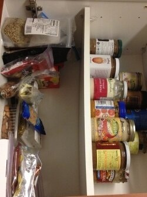
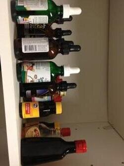
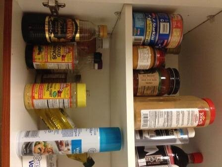

My Pantry Essentials
Sooo.. in the past, I posted a helpful little list of things you should focus on only buying when you're trying to maintain healthy foods within your kitchen that'll enable a healthy lifestyle.
But I get asked about what the most important "staple" items I use are. For baking n' stuff. I just moved into a new apartment and my pantry is nice and organized for the time being so I figured it'd be a perfect chance to share what I can't live without! The bottom shelf in this picture is what I consider my "baking" shelf. On it I have:
The bottom shelf in this picture is what I consider my "baking" shelf. On it I have:
- Stevia
- Chia seeds
- Unsweetened cocoa powder
- Baking powder/soda
- Coconut flour
- Peanut flour
- Almond meal/flour
- Garbanzo bean flour
- Xanthan gum
- Psyllium husk
- Ground flax seed
- Unsweetened shredded coconut
- Old fashioned rolled oats (except it's too big to fit on the shelf)
Upper shelf staples:
- Brown rice
- Quinoa
- Whole wheat pasta
- Chickpeas
- Black beans

The next pantry is my nuts, dried fruit, and nut butter pantry. The upper shelf speaks for itself - nut butters galore. The bottom shelf:- Quest bars
- Raisins
- Dried dates
- Dried, no sugar added, mixed fruit
- Almost any nut imaginable

This is my stevia/flavoring shelf! I pretty much hoard flavors of extracts and flavors of stevia. Call me crazy but it helps A LOT when baking.
The top shelf in this pantry is my "extra" stuff for when I run out. The bottom shelf is what I cook with usually at dinner for flavoring:- Balsamic vinegar
- Bragg's liquid aminos
- Apple cider vinegar
- Nutritional yeast
- Rice vinegar
- Coconut oil
- Olive oil
- Nonstick spray
In the fridge I've always got:
- Pumpkin puree
- Unsweetened applesauce
- Unsweetened almond milk
- Eggs and liquid egg whites
- Plain greek yogurt
- Lowfat cottage cheese
I've also got a tonnnnn of spices. And lastly, I've got a shelf of protein powder. I use cellucor and optimum nutrition for the most part, but you can check out my full review of protein powders. YUUPPP, that's it! Hope that helps!